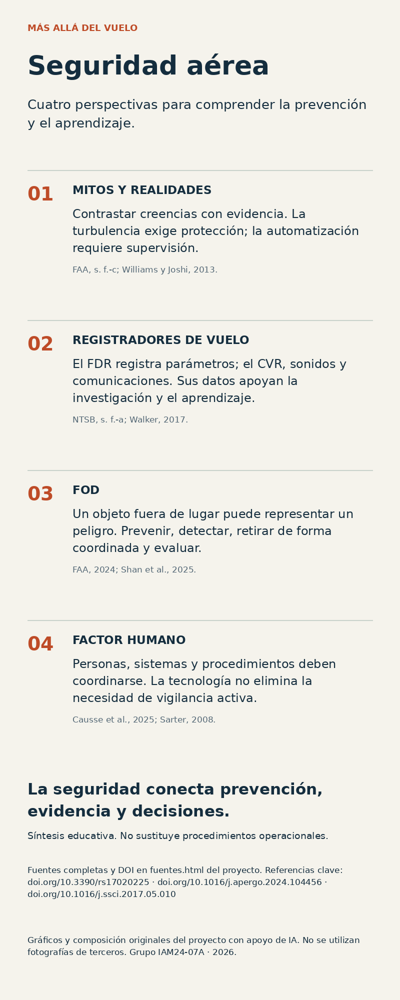

Una vista del sistema
Cuatro perspectivas
en una imagen.
Infografía vertical de 800 × 2000 píxeles. Síntesis y referencias de los cuatro subtemas.
Descargar PNG

Composición y gráficos elaborados para el proyecto con apoyo de IA. Fuentes completas en la bibliografía.